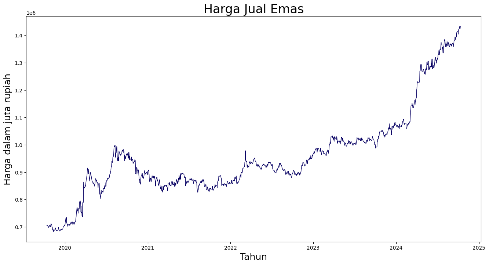
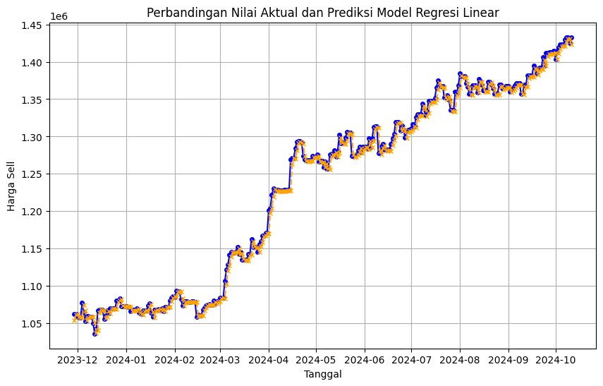
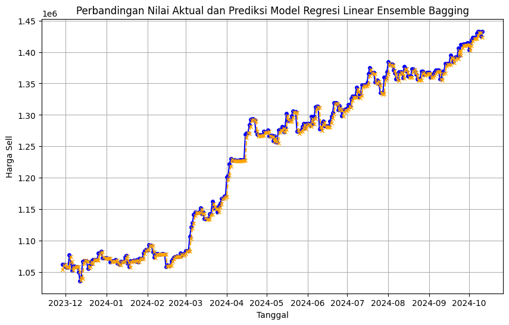

Prediksi harga jual emas#
Load Data#
#import library
import pandas as pd
# Load data
raw_df = pd.read_csv('https://raw.githubusercontent.com/atsugaa/psd/refs/heads/main/data.csv')
pd.options.display.float_format = '{:.0f}'.format
raw_df
| date | sell | buy | |
|---|---|---|---|
| 0 | 2024-10-11 | 1432610 | 1396794 |
| 1 | 2024-10-10 | 1424822 | 1389201 |
| 2 | 2024-10-09 | 1432749 | 1396930 |
| 3 | 2024-10-08 | 1432889 | 1397066 |
| 4 | 2024-10-07 | 1429635 | 1393894 |
| ... | ... | ... | ... |
| 1585 | 2019-10-18 | 703072 | 678464 |
| 1586 | 2019-10-17 | 704616 | 679954 |
| 1587 | 2019-10-16 | 703714 | 679084 |
| 1588 | 2019-10-15 | 707582 | 682816 |
| 1589 | 2019-10-14 | 704093 | 679449 |
1590 rows × 3 columns
Plotting Data#
df = raw_df[['date', 'sell']]
df['date'] = pd.to_datetime(df['date'], dayfirst=True, format='%Y-%m-%d').dt.date
df.set_index('date', inplace=True)
df.index = pd.to_datetime(df.index)
df = df.sort_index()
df
C:\Users\atsuga\AppData\Local\Temp\ipykernel_9872\336552456.py:2: SettingWithCopyWarning:
A value is trying to be set on a copy of a slice from a DataFrame.
Try using .loc[row_indexer,col_indexer] = value instead
See the caveats in the documentation: https://pandas.pydata.org/pandas-docs/stable/user_guide/indexing.html#returning-a-view-versus-a-copy
df['date'] = pd.to_datetime(df['date'], dayfirst=True, format='%Y-%m-%d').dt.date
| sell | |
|---|---|
| date | |
| 2019-10-14 | 704093 |
| 2019-10-15 | 707582 |
| 2019-10-16 | 703714 |
| 2019-10-17 | 704616 |
| 2019-10-18 | 703072 |
| ... | ... |
| 2024-10-07 | 1429635 |
| 2024-10-08 | 1432889 |
| 2024-10-09 | 1432749 |
| 2024-10-10 | 1424822 |
| 2024-10-11 | 1432610 |
1590 rows × 1 columns
fig, ax1 = plt.subplots(figsize=(16, 8))
plt.title("Harga Jual Emas", fontsize=24)
plt.ylabel('Harga dalam juta rupiah', fontsize=18)
plt.xlabel('Tahun', fontsize=18)
sns.set_palette(["#090364", "#1960EF", "#EF5919"])
sns.lineplot(data=df['sell'], linewidth=1.0, dashes=False, ax=ax1)
plt.show()

Preprocessing Data#
Normalisasi Data#
def normalize(df):
from sklearn.preprocessing import RobustScaler, MinMaxScaler
np_data_unscaled = np.array(df)
scaler = MinMaxScaler()
np_data_scaled = scaler.fit_transform(np_data_unscaled)
print(np_data_unscaled)
normalized_df = pd.DataFrame(np_data_scaled, columns=df.columns, index=df.index)
pd.set_option('display.float_format', '{:.4f}'.format) # Menampilkan 4 desimal
return normalized_df, scaler
normalized_df, scaler = normalize(df)
normalized_df
[[ 704093]
[ 707582]
[ 703714]
...
[1432749]
[1424822]
[1432610]]
| sell | |
|---|---|
| date | |
| 2019-10-14 | 0.0281 |
| 2019-10-15 | 0.0327 |
| 2019-10-16 | 0.0276 |
| 2019-10-17 | 0.0288 |
| 2019-10-18 | 0.0267 |
| ... | ... |
| 2024-10-07 | 0.9957 |
| 2024-10-08 | 1.0000 |
| 2024-10-09 | 0.9998 |
| 2024-10-10 | 0.9892 |
| 2024-10-11 | 0.9996 |
1590 rows × 1 columns
Sliding Window#
def sliding_window(data, lag):
series = data['sell']
result = pd.DataFrame()
for l in lag:
result[f'sell-{l}'] = series.shift(l)
result['sell'] = series[l:]
result = result.dropna()
result.index = series.index[l:] # Mengatur index sesuai dengan nilai lag
return result
windowed_data = sliding_window(normalized_df, [1, 2, 3])
windowed_data = windowed_data[['sell', 'sell-1', 'sell-2', 'sell-3']]
print(windowed_data)
sell sell-1 sell-2 sell-3
date
2019-10-17 0.0288 0.0276 0.0327 0.0281
2019-10-18 0.0267 0.0288 0.0276 0.0327
2019-10-21 0.0239 0.0267 0.0288 0.0276
2019-10-22 0.0189 0.0239 0.0267 0.0288
2019-10-23 0.0236 0.0189 0.0239 0.0267
... ... ... ... ...
2024-10-07 0.9957 0.9873 0.9873 0.9868
2024-10-08 1.0000 0.9957 0.9873 0.9873
2024-10-09 0.9998 1.0000 0.9957 0.9873
2024-10-10 0.9892 0.9998 1.0000 0.9957
2024-10-11 0.9996 0.9892 0.9998 1.0000
[1587 rows x 4 columns]
Splitting Data#
def split_data(data, target, train_size):
split_index = int(len(data) * train_size)
x_train = data[:split_index]
y_train = target[:split_index]
x_test = data[split_index:]
y_test = target[split_index:]
return x_train, y_train, x_test, y_test
input_df = windowed_data[['sell-1', 'sell-2', 'sell-3']]
target_df = windowed_data[['sell']]
x_train, y_train, x_test, y_test = split_data(input_df, target_df, 0.8)
print("X_train shape:", x_train.shape)
print("y_train shape:", y_train.shape)
print("X_test shape:", x_test.shape)
print("y_test shape:", y_test.shape)
X_train shape: (1269, 3)
y_train shape: (1269, 1)
X_test shape: (318, 3)
y_test shape: (318, 1)
Modelling#
Regresi Linear tanpa Ensemble Bagging#
from sklearn.linear_model import LinearRegression
from sklearn.metrics import mean_squared_error, mean_absolute_percentage_error
linear_model = LinearRegression()
linear_model.fit(x_train, y_train)
LinearRegression()In a Jupyter environment, please rerun this cell to show the HTML representation or trust the notebook.
On GitHub, the HTML representation is unable to render, please try loading this page with nbviewer.org.
LinearRegression()
# Melakukan prediksi
y_pred = linear_model.predict(x_test)
# Menghitung error
mse = mean_squared_error(y_test, y_pred)
rmse = np.sqrt(mse)
mape = mean_absolute_percentage_error(y_test, y_pred)
print("Mean Squared Error (MSE):", mse)
print("Root Mean Squared Error (RMSE):", rmse)
print("Mean Absolute Percentage Error (MAPE):", mape, " %")
Mean Squared Error (MSE): 0.00012521727152976203
Root Mean Squared Error (RMSE): 0.011190052347051914
Mean Absolute Percentage Error (MAPE): 0.010482371265015689 %
# Membuat grafik perbandingan
plt.figure(figsize=(10, 6))
plt.plot(y_test.index, scaler.inverse_transform(y_test.values.reshape(-1, 1)), label='Aktual', color='blue', marker='o', linestyle='-', markersize=4)
plt.plot(y_test.index, scaler.inverse_transform(y_pred.reshape(-1, 1)), label='Prediksi', color='orange', marker='x', linestyle='--', markersize=4)
plt.title('Perbandingan Nilai Aktual dan Prediksi Model Regresi Linear')
plt.xlabel('Tanggal')
plt.ylabel('Harga Sell')
plt.grid()
plt.show()

last_row = windowed_data.iloc[-1][['sell-1', 'sell-2', 'sell-3']].values.reshape(1, -1)
predicted_value_normalized = linear_model.predict(last_row)
predicted_value = scaler.inverse_transform(predicted_value_normalized.reshape(-1, 1))
last_price = scaler.inverse_transform(normalized_df[['sell']].iloc[-1].values.reshape(-1, 1))
percentage_change = ((predicted_value[0][0] - last_price[0][0]) / last_price[0][0]) * 100
if percentage_change > 0:
change_sign = '+'
else:
change_sign = ''
print(f'Harga emas hari ini: {last_price[0][0]}')
print(f'Prediksi harga emas untuk hari esok: {predicted_value[0][0]} ({change_sign}{percentage_change:.2f}%)')
Harga emas hari ini: 1432610.0
Prediksi harga emas untuk hari esok: 1423490.2503133498 (-0.64%)
C:\Users\atsuga\AppData\Local\Programs\Python\Python312\Lib\site-packages\sklearn\base.py:493: UserWarning: X does not have valid feature names, but LinearRegression was fitted with feature names
warnings.warn(
Regresi Linear dengan Ensemble Bagging#
from sklearn.ensemble import BaggingRegressor
base_model = LinearRegression()
bagging_model = BaggingRegressor(estimator=base_model, n_estimators=10, bootstrap=True)
bagging_model.fit(x_train, y_train)
y_pred = bagging_model.predict(x_test)
mse = mean_squared_error(y_test, y_pred)
rmse = np.sqrt(mse)
mape = mean_absolute_percentage_error(y_test, y_pred)
print(f'Mean Squared Error: {mse}')
print(f'Root Mean Squared Error: {rmse}')
print(f'Mean Absolute Percentage Error (MAPE): {mape} %')
Mean Squared Error: 0.0001273975321659915
Root Mean Squared Error: 0.011287051526682754
Mean Absolute Percentage Error (MAPE): 0.010679093537928662 %
C:\Users\atsuga\AppData\Local\Programs\Python\Python312\Lib\site-packages\sklearn\ensemble\_bagging.py:581: DataConversionWarning: A column-vector y was passed when a 1d array was expected. Please change the shape of y to (n_samples, ), for example using ravel().
return column_or_1d(y, warn=True)
# Membuat grafik perbandingan
plt.figure(figsize=(10, 6))
plt.plot(y_test.index, scaler.inverse_transform(y_test.values.reshape(-1, 1)), label='Aktual', color='blue', marker='o', linestyle='-', markersize=4)
plt.plot(y_test.index, scaler.inverse_transform(y_pred.reshape(-1, 1)), label='Prediksi', color='orange', marker='x', linestyle='--', markersize=4)
plt.title('Perbandingan Nilai Aktual dan Prediksi Model Regresi Linear Ensemble Bagging')
plt.xlabel('Tanggal')
plt.ylabel('Harga Sell')
plt.grid()
plt.show()

last_row = windowed_data.iloc[-1][['sell-1', 'sell-2', 'sell-3']].values.reshape(1, -1)
predicted_value_normalized = bagging_model.predict(last_row)
predicted_value = scaler.inverse_transform(predicted_value_normalized.reshape(-1, 1))
last_price = scaler.inverse_transform(normalized_df[['sell']].iloc[-1].values.reshape(-1, 1))
percentage_change = ((predicted_value[0][0] - last_price[0][0]) / last_price[0][0]) * 100
if percentage_change > 0:
change_sign = '+'
else:
change_sign = ''
print(f'Harga emas hari ini: {last_price[0][0]}')
print(f'Prediksi harga emas untuk hari esok: {predicted_value[0][0]} ({change_sign}{percentage_change:.2f}%)')
Harga emas hari ini: 1432610.0
Prediksi harga emas untuk hari esok: 1423168.626103751 (-0.66%)
C:\Users\atsuga\AppData\Local\Programs\Python\Python312\Lib\site-packages\sklearn\base.py:493: UserWarning: X does not have valid feature names, but BaggingRegressor was fitted with feature names
warnings.warn(
Grid Search#
def rmse(y_true, y_pred):
return np.sqrt(mean_squared_error(y_true, y_pred))
def grid_search(input_df, target_df, splits, estimators, bootstrap, max_samples):
best_rmse = float('inf')
best_params = None
i = 0
for split in splits:
x_train, y_train, x_test, y_test = split_data(input_df, target_df, 0.8)
for estimator in estimators:
for bootstrap in bootstraps:
for max_sample in max_samples:
base_model = LinearRegression()
bagging_model = BaggingRegressor(estimator=base_model, n_estimators=estimator, bootstrap=bootstrap, max_samples=max_sample)
bagging_model.fit(x_train, y_train.values.ravel())
y_pred = bagging_model.predict(x_test)
i+=1
current_rmse = rmse(y_test, y_pred)
#print(f'Model {i} split: {split}, estimator: {estimator}, bootstrap: {bootstrap}, max sample: {max_sample}, RMSE: {current_rmse}')
if current_rmse < best_rmse:
best_rmse = current_rmse
best_model = bagging_model
best_params = {'estimator': estimator, 'bootstrap': bootstrap, 'train_sample': split, 'max_sample': max_sample}
tf.keras.backend.clear_session()
return best_params, best_rmse, best_model
# Parameter untuk Grid Search
splits = [0.7, 0.75, 0.8, 0.85, 0.9]
estimators = [10, 20, 50, 100]
bootstraps = [True, False]
max_samples = [0.8, 0.9, 1.0]
best_params, best_rmse, best_model = grid_search(input_df, target_df, splits, estimators, bootstraps, max_samples)
Dari 120 model, didapatkan model terbaik dengan parameter berikut
# Parameter terbaik
print(f'Best parameters: {best_params}')
print(f'Best RMSE: {best_rmse}')
Best parameters: {'estimator': 10, 'bootstrap': False, 'train_sample': 0.85, 'max_sample': 0.8}
Best RMSE: 0.011039280796414285
Uji Coba#
sell_1 = int(input("Harga emas hari ini: "))
sell_2 = int(input("Harga emas 1 hari sebelumnya: "))
sell_3 = int(input("Harga emas 2 hari sebelumnya: "))
#sell_1 = 1492738
#sell_2 = 1432846
#sell_3 = 1443278
last_row = np.array([
scaler.transform([[sell_1]]).flatten()[0],
scaler.transform([[sell_2]]).flatten()[0],
scaler.transform([[sell_3]]).flatten()[0]
]).reshape(1, -1)
last_row_df = pd.DataFrame(last_row, columns=['sell-1', 'sell-2', 'sell-3'])
predicted_value_normalized = best_model.predict(last_row_df)
predicted_value = scaler.inverse_transform(predicted_value_normalized.reshape(-1, 1))
last_price = sell_1
percentage_change = ((predicted_value[0][0] - last_price) / last_price) * 100
change_sign = '+' if percentage_change > 0 else ''
formatted_predicted_value = f"{predicted_value[0][0]:,.2f}".replace(',', 'X').replace('.', ',').replace('X', '.')
formatted_last_price = f"{last_price:,.2f}".replace(',', 'X').replace('.', ',').replace('X', '.')
print(f'Harga emas hari ini: Rp {formatted_last_price}')
print(f'Prediksi harga emas untuk hari esok: Rp {formatted_predicted_value} ({change_sign}{percentage_change:.2f}%)')
Harga emas hari ini: Rp 1.442.587,00
Prediksi harga emas untuk hari esok: Rp 1.436.242,65 (-0.44%)